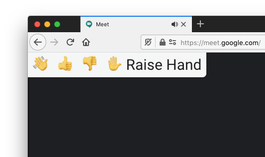

Usage
Click an emoji in the wave toolbar in Google Meet to send it as a chat message.

Try my other apps
Google Classroom Todo SidebarAdds a button that shows Google Classroom To-do in the sidebar. |
|
Google Chat SidebarAdds a button that shows Google Chat in the sidebar. |